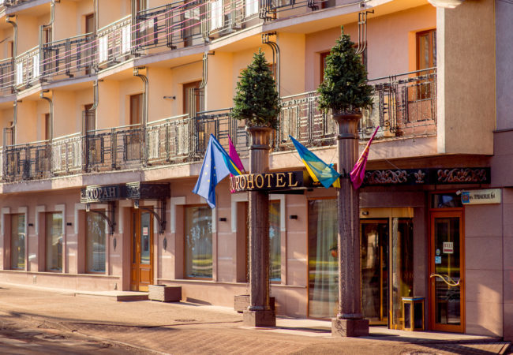

Lwów można zwiedzać z góry - z wysokich dachów, wież kościelnych, tarasów widokowych czy wieży ratuszowej. Także z podziemi – można zejść do piwnic, kopalni czy prawdziwych bernardyńskich podziemi.
Bodziec lwowski
Kawa we Lwowie smakuje „inaczej". Lwowianie ją piją w nielicznych autentycznych kawiarniach lub schodzą do kopalni, gdzie cały czas odbywa się proces wydobycia tego genialnego napoju.
Dusza miasta
Lwów to nie tylko budynki, piękna architektura i świeże powietrze, lecz przede wszystkim, ludzie. Można się przejść śladami Banacha, Konopnickiej, Kilara, lwowskich świętych, poszukać korzenie rodzinne.
Przemierzaj miasto wzdłuż i wszerz
Chciałbyś zobaczyć stare uliczki, dawne kamienice, zabytkowe place? Po prostu zdecyduj, w jaki sposób lubisz to robić! Nasi przewodnicy pojadą z Tobą rowerem, pójdą pieszo i pojadą przysłowiową furgonetką.